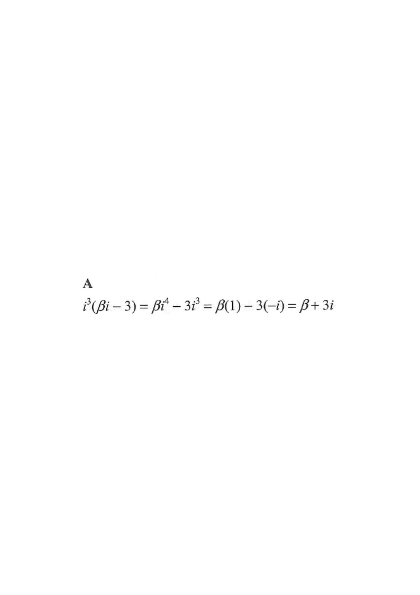

Step 1 — Given: $i^2(\beta i - 3)$ with $\beta$ a real number.
given expression$i^2=-1$distribute / simplifyfinal answer
HKDSE 2012 P2Question 35
35.
If $\beta$ is a real number, then
\[ i^{\,2}(\beta i - 3) = \]
A. $\beta + 3i$
B. $\beta - 3i$
C. $-\beta + 3i$
D. $-\beta - 3i$

Figure (original exam diagram)
Step 1 · Read the given
We are asked to simplify
$$i^{2}(\beta i - 3)$$
where $\beta$ is a real number. Recall that $i$ is the imaginary unit with
\[ i^2 = -1. \]
Hint: Replace $i^2$ by $-1$ before distributing.
Step 2 · Substitute $i^2=-1$
\[ i^{2}(\beta i - 3) = (-1)(\beta i - 3). \]
Hint: The whole bracket is multiplied by $-1$.
Step 3 · Distribute the $-1$
\[ (-1)(\beta i - 3) = -\beta i + 3. \]
Hint: Watch the signs: $-(-3)=+3$ and $-(\beta i)=-\beta i$.
Step 4 · Convert $i^2$ into a real part
Alternatively, expand first:
\[ i^{2}\beta i - 3i^{2} = \beta\, i^{3} - 3i^{2}. \]
Since $i^{3}=i^{2}\cdot i = -i$ and $i^{2}=-1$,
\[ \beta(-i) - 3(-1) = -\beta i + 3. \]
Hint: Both methods must give the same result.
Step 5 · Write in $a+bi$ form
\[ -\beta i + 3 = 3 + (-\beta)i, \]
which is the standard form with real part $3$ and imaginary part $-\beta$.
Hint: Re-order as real part $+$ imaginary part.